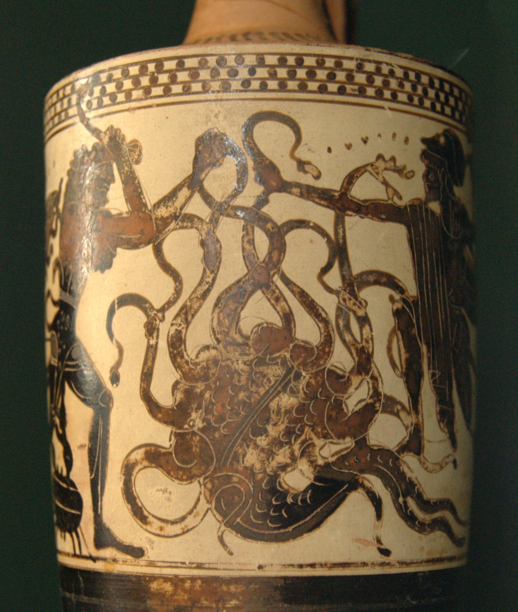
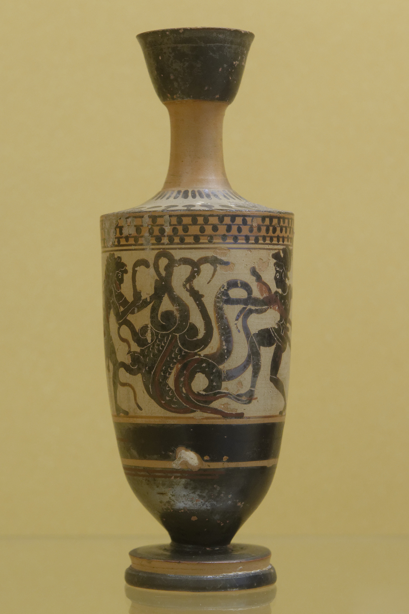

μυριόκρανος πολύφονος κύων
« Chienne aux mille têtes, avide de sang »
Euripide, Héraclès furieux, Ve s. av. J.-C.
Premier auteur à mentionner la cautérisation par Iolaos : le motif de la régénération est comparativement tardif

Influences orientales
Sceau akkadien de Tell Asmar (~2500 av. J.-C.) : dieu de la fertilité vs dragon à 7 têtes
Mythologie ougaritique : Baal vs Lotan (serpent à 7 têtes)
Mythologie hébraïque : Yahwé vs Léviathan (Psaume 74)
Le motif du combat héros/dragon polycéphale est antérieur de plus de 2000 ans au mythe grec

Sceau cylindre akkadien, Tell Asmar, ~2500 av. J.-C.

Plaquette en terre cuite, Mésopotamie, ~2500-2000 av. J.-C.
Sceau cylindre, Tell Asmar, ~2500 av. J.-C.
Terre cuite, Mésopotamie, ~2500-2000 av. J.-C.
L'iconographie antique
Gibbons + Gilis & Verbanck-Piérard
Plus anciennes représentations : fibules béotiennes en bronze (~VIIIe s. av. J.-C.)
Évolution des armes : épée → faucille/serpe → massue → arc → tison
Le tison n'apparaît en art que fin VIe s., bien qu'Euripide soit la première source littéraire
Constance iconographique remarquable sur plus de 6 siècles

Amphore attique de Tarquinia, 560-540 av. J.-C.
Amphore de Tarquinia, 560-540 av. J.-C.

Louvre CA 598, VIe s. av. J.-C.

Nationalmuseet, Copenhague
Hydrie cérétaine
Getty Museum (83.AE.346)
520-510 av. J.-C.
Attribuée au « Peintre de l'Aigle »
Héraklès en cuirasse et jambières
Iolaos utilise une serpe pour trancher les têtes
Le crabe géant pince le talon d'Héraklès

Hydrie cérétaine, Getty Museum

Mosaïque romaine, IIIe s. ap. J.-C., Liria (Valence, Espagne), Musée archéologique national, Madrid
Héraclès combattant l'Hydre de Lerne - le motif perdure dans l'art romain

Manuscrit enluminé, BnF, Français 22552 f.160, XVe s.
Le monstre christianisé : l'Hydre comme symbole du Mal vaincu par Hercule
Moyen Âge : bestiaires et théologie
L'Hydre confondue avec l'hydrus (serpent d'eau qui tue le crocodile), représentée comme dragon ailé
Associée au Dragon de l'Apocalypse à 7 têtes
La régénération = parodie démoniaque de la résurrection, persistance du vice
Bestiaires : Northumberland (~1250), Fountains Abbey (~1325)

Bestiaire du Northumberland, ~1250
Andrea Alciato, Emblematum Liber
Emblème 136 : Duodecim Certamina Herculis
Invention du genre du livre d'emblèmes
L'Hydre = le vice qui se multiplie quand on ne l'éradique pas
Allégorie humaniste : Hercule = le sage triomphant de la folie

Édition latine, Lyon, 1550 (Pierre Eskrich)
1550 - têtes de serpent

1615 - têtes humanoïdes
En 65 ans, le monstre mythique devient une figure allégorique explicitement moralisée
« Par Hercules est signifiée vertueuse eloquence avec sagesse »
Barthélemy Aneau, traduction française, 1558

Hans Sebald Beham, Hercules una cum Iolao Hydram occidit, 1545
Gravure maniériste montrant Hercule et Iolaos combattant ensemble l'Hydre

Francisco de Zurbarán, Hercule combat l'Hydre, 1634, Prado
Série des Travaux d'Hercule pour le Salon des Royaumes : Hercule comme figure du pouvoir royal espagnol
Hercule terrassant l'Hydre de Lerne
Pierre Puget
1659-1660, château du Vaudreuil
Musée des Beaux-Arts de Rouen
Hercule = Le Roi. Symbole ultime de la vertu royale sous Louis XIV.
Influence de Michel-Ange, violence baroque avec discipline classique.
Brisée pendant la Révolution, retrouvée enterrée en 1883.


« Gorgons, and Hydras, and Chimeras dire »
« Gorgones, Hydres, et effroyables Chimères »
John Milton, Paradise Lost, 1667
L'Hydre = figure de l'enfer, du monstrueux absolu

Gravure pour Paradise Lost
LA MÉTAPHORE S'INVERSE
L'Hydre aristocratique, 1789
Estampe révolutionnaire (Gallica, BnF)
Le peuple = nouvel Hercule
L'Hydre = l'aristocratie

Le retournement
Becquet (imprimerie)
L'Hydre de l'Anarchie, ~1830
Musée Carnavalet, inv. G.45138
Les conservateurs retournent la métaphore
Le même monstre sert les deux camps
XVIIe s. colonial : les « têtes toujours changeantes du monstre » (Linebaugh & Rediker, The Many-Headed Hydra, 2000)


Johannes Hevelius, Uranographia, 1690 - La constellation Hydra
Hydra : la plus grande des 88 constellations modernes, réinterprétation du Mush-dragon babylonien. Le Cancer (crabe) : constellation voisine, placée par Héra.
Comparaison interculturelle : le Xiangliu chinois
(Huang Chi, 2021)
| Hydre | Xiangliu | |
|---|---|---|
| Apparence | 9 têtes de dragon | 9 visages humains |
| Régénération | Oui | Non |
| Lien à l'eau | Marais de Lerne | Dieu de l'eau (Gonggong) |
| Héros | Héraklès | Dayu |
| Venin | Oui | Oui (sang empoisonne la terre) |
Mêmes thèmes (contrôle des inondations, culte du héros) mais le dragon est sacré en Chine

Le Xiangliu, Shanhaijing